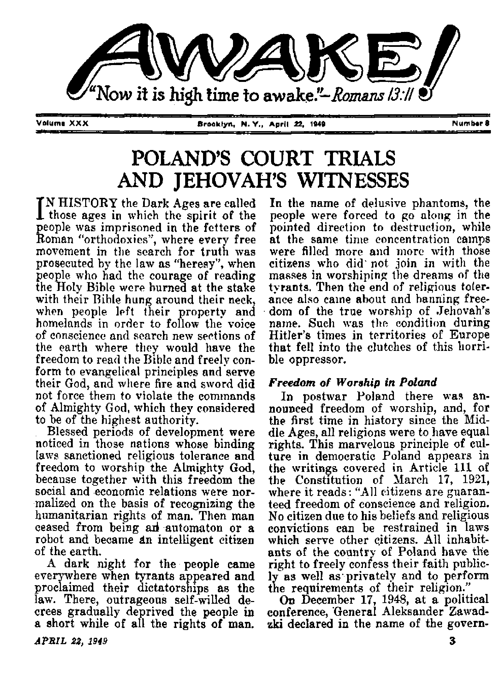
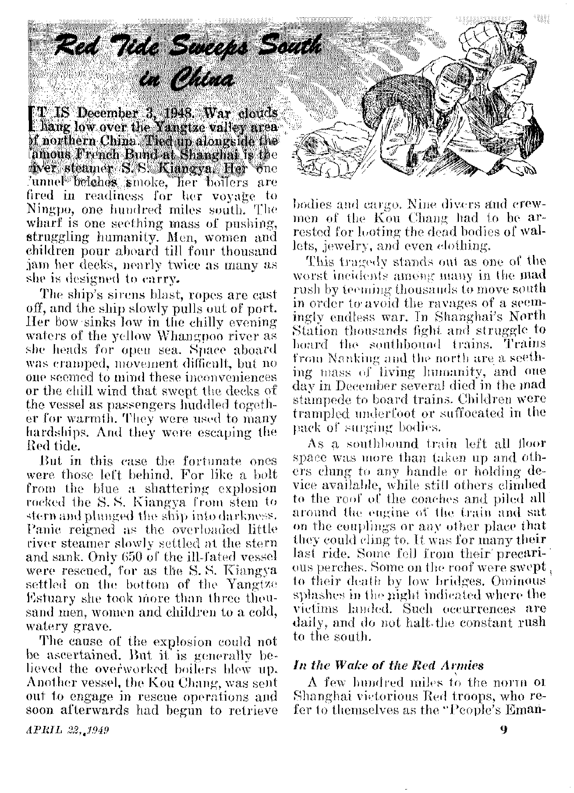
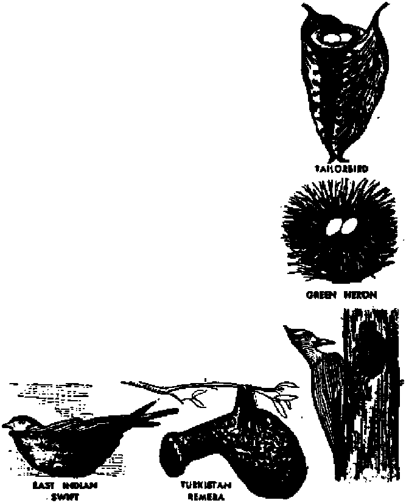

POLAND’S COURT TRIALS AND JEHOVAH’S WITNESSES
Catholic priest and his rabble mob get jail terms
Red Tide Sweeps South in China
Refugees flee before it, but what follows in its wake ?
Bird Architects Conquer Housing Problems
Feathered craftsmen build nests that will amaze you Some weigh an ounce or two; others weigh a ton or two
Trinidad’s Famous Pitch Lake
Millions ride on a part of Trinidad and never know it
APRIL 22, 1949 semimonthly
THE MISSION OF THIS JOURNAL
News gourdes that are able to keep you awake to the vital issues of our times must be unfettered by censorship and selfish interests. “Awake1” has no fetters. It recognizes facts, faces facts, is free to publish facts. It is not bound by political ambitions or obligations; it is unhampered by advertisers whose toes must not be tread upon; it is unprejudiced by traditional creeds. This journal keeps itself free that it may speak freely to you. But it does not abuse its freedom. It maintains integrity to truth.
"Awake I'* uses the regular news channels, but is not dependent on them. Its own correspondent a are on all continents, in scores of nations* From, the four comers of the earth their uncensored, on.-the-scenes reports come to you through these columns* This journal's viewpoint is not narrow, but is international. It is read in many nations, in many languages, by persons of all ages. Through its pages many fields of knowledge pass in review—government, commerce, religion, history, geography, science, social conditions, natural wonders—why, its coverage is os broad as the earth and as high as the heavens.
"Awake I” pledges Itself to righteous principles, to exposing hidden foes and subtle dangers, to championing freedom for all, to comforting mourners and strengthening those disheartened by the failures of a delinquent world, reflecting sure hope for the establishment of a righteous New World.
Get acquainted with "Awake!" Keep awake by reading “Awake!”
Published Semimonthly By WATCHTOWER BIBLE AND TRACT SOCIETY. INC.
117 Adama Street Brooklyn 1. N. Y„ U. 9. A
N. H. Kkdjlk, President GaaNT Sditeb. Secretary
Fiv« cent« a copy One dollar a year
H*Nlttan««i should be sent io rfka Id Four country in ctiDiplianis with regularises to £uaTko(n safe delittry of money. Remittances, an accepted at Brooklyn from countries ■where co ntdcfi li located, by intern iilonal money order only. Subscription rat« in different ttmutries an bare stated In loci) cu/7*&cy.
Nrttee of expiration (frith blank) U mrt at lexst twg iwies before lUtacriptlGn expire
Entered h wcond-dMs matter at Brocklyu, If.
Chanpa of addreu when dent to our office may be expected effective within one month. Rend your old ai well as nt» address.
Offices Yearly kubstriptlon Bate
Am erica, U.S.. Ur Adams St., ^rocilyn 1, Ji.Y, fl A is trail a. 11 Berwick Hl, SDeitiftelJ. N.S.W. He CboaiU, 10 Irwlu A>r„ Toronto 5. OnUrb n Engined, 34 Crmn Terrace, Landon. W, 2 0*
South Attlee, 613 Boston. House, Cape Town tie
I.. Act d March 3, 1879. Printed ir U.S.A.
CONTENTS
Poland’s Court Trials and
Persecution of Jehovah’s witnesses
Red Tide Sleeps South in China
Bird Architects Conquer Housing Problems 12
Miners, Masons, Bricklayers and Bakers 15
“Thy Word Is Truth”
Resurrection of the Body with
Embezzlement—Confession of a Priest
Cross-Worship Ritual Ends in Brawl
ment: "The governing political party respects the religious affection of believing persons and takes the position of not mixing the state in religious matters.
The government holds to its democratic principles of not controlling the internal affairs of beliefs?’
Independent of this, the government’s bidding laws assure the protection of .minority beliefs attacked by the fanatical hordes of Catholic Action, who, organized in forest bands, fall upon the homes of Jehovah’s witnesses, murder thepi and steal their property. Although such conditions have decreased considerably of late due to the energetic movements of the government, yet on November 21, 1948, one of Jehovah’s witnesses, Jozef Sieja, was killed in the village of Boro-Wianka, community of Kamyk, county ■of Czestochowa, because he freely told all the Catholic inhabitants of this village about God's purposes.
For effectively fighting the excesses of terroristic Catholic Action bands, the Polish state on June 13, 1946, issued a decree concerning offenses especially unsafe in the period of rebuilding the state. Article 31 of this decree states: "Whoever publicly insults, derides or lowers a group of people or a certain person due to his belonging to a certain belief, is subject to five years’ imprisonment. Also falling under this same punishment are those who disturb the inviolability or render light bodily harm to a person due to his belonging to a certain belief?’
In spite of such wonderful Polish legislation, Jehovah’s witnesses in Poland are further persecuted as already brought out in the December 22, 1948, issue of Awake! Very often events occur where other people are mistaken for Jehovah’s witnesses and they become victims of a fanatical religious mob who throw themselves at these defenseless people, tear off their clothing and rob them after beating them into unconsciousness.
In some backward villages it suffices if a cultured man appears with a leather brief case in his hand. Before uttering a word, he is considered to be one of Jehovah’s witnesses and shares their fate, not knowing the reason why they are beating him and calling him "Jehovite” or “cat’s faith”. Many times government officials have run into this same fate in the villages and they did not understand that the leather brief case they carried brought upon them the attention of the dark elements who considered them to be Jehovah’s witnesses. Such a fortune also befell common excursion cyclists who were mistaken for Jehovah’s witnesses, because Jehovah’s witnesses also ride on bicycles in groups to their territories to bring the message of God’s truth to the farthest parts of the country.
The police often write up reports of beatings of Jehovah's witnesses. In most cases, they direct these to the courts. However, the clergy stand up for their dupes at these court trials by furnishing them' with several lawyers who defend them before the bar of justice. In many cases the criminals are freed from guilt and punishment, while in others their punishment is suspended and therefore they continue to rage*freely and without punishment. At such times no newspaper writes up a report of the injuries inflicted upon Jehovah’s witnesses.
In this regard we have a typical case as reported in the December 22, 1948, Awake! (page 6), The assaulters who performed this crime on September 5, 1948, were arrested as late as September 27, 1948, wheti some university students were beaten ih this section, after being mistaken for Jehovah’s witnesses.. These two cases were heard in court beginning November 29,1948, the only difference being that the case involving Jehovah’s witnesses was held in the district court of Piotrkow Trybunski, while the case of the university students was held in the Regional Military Court in Lodz.
Fourteen persons had been arrested as having taken part in the mob action against Jehovah's witnesses in Piotrkow Trybunski on September 5, 1948. These appeared on trial defended by six lawyers. After hearing sixty witnesses during the trial, the prosecutor summed up the matter by laying stress on the fights of different religious confessions in Poland and that the mobsters had acted as barbarians. He stated that the beatings of Jehovah’s witnesses in Piotrkow Trybunski on September 5, 1948, and the beatings of the university students in K ami on s k and (lorzknwice on September , 22, 1948, were closely tied in together, He also brought out that an effective educational campaign was necessary to teach ail to have respect for the law.
After being in counsel for a few hours, the following verdict was handed down sentencing nine of the accused: Pelagia Morawska, three years in prison, five years deprivation of citizens' rights, 5,000 zlotys for court fees; Antonina Krawczyk, one and a half years in prison, 2,000 zlotys for court fees; Konstantin Jagodzinski, two and a half years in prison (he struck Paul Mahaluk over the head while unconscious, and Jagodzinski has since died in prison); Helena Gto-waeka, one year in prison; Mieczystaw Longin Hubert, one year in prison; Zdzislaw Szafran, one year in prison; Janina Rutowicz and Stefan Siurka, six months each in prison, and John Chrzas-zcz guilty but placed under responsible supervision of his mother. After the verdict, the lawyers of the accused appealed the case to the highest court where a review is expected to be had in the near future.
From the above, one can see that the assaulters of Jehovah's witnesses were suitably punished. However, no newspaper carried a report of the two-day trial, even though a reporter was pres-APRIL 22, 1949
ent each day. The trial of the mobbed university students, on the other hand, was published widely by the press throughout the whole country.
Students Mistaken for
Jehovah’s tvitnesses
In connection with the court trial of the mobbed university students, the Polish press has written up a series of characteristic reports which undoubtedly will interest our Awake! readers. From these reports the following account, along with some quotations, is given to make known the facts.
A school camp was organized near Sulejdw for students of history and art. It was also the duty of the students there to encourage art appreciation among the local inhabitants and urge them to care for old relics. To facilitate study of local art and relics, permission was obtained from the*Bishops Curia of Lodz and Sandomierz for the right to view church treasures and archives. In accord with these provisions and in pursuit of their study of art on September 22, 1948, the university students visited Karniensk and Gorzkowice. While so engaged, the students were set upon by a mob and severely beaten. The mob thought them to be Jehovah’s witnesses.
When the Kamiensk-Gorzkowice case was called for trial November 29, 1948, on the bench of the accused sat: Priest Tomasz Opasiewicz, his housemaid Izabella Dukowicz, J. Kiziik, Kazimierz and Czeslaw Strzelecki, J. Roczek, J. Ghi-chowski, Wladyslaw and Czeslaw Obst, J. Moneta and St. Wysocki. During the trial the accused persons centered their attention on Priest Opasiewicz, seeking to determine from his facial expression what they should say. All during the trial Priest Opasiewicz kept mumbling prayers with his rosary. It was brought out "that his attitude against the students was hostile and that he had encouraged his housemaid, Izabella Dukowicz, to spread lies among the local residents to flw effect that the students were not actually engaged in scientific works but were members of Jehovah's witnesses who destroy churches, chapels, graves and profane objects of religious worship. The results of this priestly influence and the activity of the deluded housemaid under his thumb was the organizing of the mob. Armed with hammers, sticks arid pitchforks they assaulted the students. The ringing of the church bell was a signal for the mob. The following excerpts from accounts in the public press will supply a few details: .
Anna Dobrzynska, assistant in the University of Poznan, describes the course of events to the moment when the hostile mob attacked them. (This student was severely beaten, kicked and someone ran over her with a bicycle. She spent five weeks in a hospital.) By a miracle, they left Gorzpdfiw determined to return to the priest in Kamiefisk. “I had documents in my hand and wanted to make an understanding. The hostile mob continued to increase on the way. When we came near the town, a bell rang as an alarm. Our first thought was to find protection, and so we rang and knocked at the priest’s door, but in vain. A man on a bicycle went before us who went to the priest’s room, The doors were immediately closed after him and locked by a chain. When we saw we would not get any protection here, we wanted to use some Of the side streets to get out of town, but the mob dragged us to the market place, I was hit in the face between the eyes. They broke mjr glasses and my nose. We were surrounded everywhere by wild screams railed at us with the words ‘cat’s faith’.” [The mob also cried out: “Beat Jehovah’s witnesses 1 bandits'!”] —Glos Robotniczy (Worker’s Voice) No, 329, December 1, 1948.
However, there were some who were indignant at the outrages and tried tp help the students. Witness Marian Malczewski, barber in Gorzkowice, belonged to these. When this man defended one of the students, the mob cried out: “Let her go 1” And when he did not want to give the maltreated woman as a prey
to the enraged mub, they yelled out coneera-ing him; “Spy! Now he revealed himself, he's a bishop of the Jehovah’s!”—Dziennik Ltidzki (Lodz Daily) No. 332, December 2, 1948.
The most shocking impressions were those made by the testimony of witness Edmund Mahczak. To this day he is in bandages. He speaks slowly. His jaw was broken in three places and he has a broken nose. He describes the events in Gorzkowice where they waited in the restaurant for an automobile. When they came in, the restaurant was empty. In a short while a group of men came in. One of them came to their table and requested the students to receive him into their sect. The students testified that they did not belong to any sect. After several, moments, these men pulled out the chairs from under the students and used them to beat the students. A large mob gathered outside the restaurant. When the students ran from the restaurant, the mob threw themselves at them and beat them with stones, hammers, pitchforks. All of the injured testified that they showed their student identifica-' tion proofs and also their church medals to confirm that they were not *fJehovites’\ but the mad mob' incited on by the ringleaders did not pay any attention.—Express lluatra-wany (The Illustrated Express) No. 331 December 1, 1948.
Not all of the injured at the events in Ka-miensk and Gorzkowice could attend the court trial. In the documents of the court there is a certificate written by Doctor B. Werpa-chowski, specialist for nervous sicknesses, stating that Zofia Wflinska, a student from Poz-nafi who was summoned to the trial to be a witness, could not appear dye to the psychic derangement of her nerves from the whole affair. (During the beating of the students, Wilifiska hid herself in an attic. Some of the mobsters who noticed her gathered straw there for the purpose of burning down the house together with her.) —Dziennik Lodzki (Lodz Dally) No. 331, December 1, 1948.
Prior to eentencing, the prosecutor had accurately pointed out the Jesuit methods employed by the priest and made these demands in his closing argument as quoted from the Express Hus-trawany (The Illustrated Express) No, 334, December 4, 1948:
The dealings of the accused priest Opasie-wiez are typically Jesuitical. He incites the multitudes of devotees and various fraternities and covers himself up in'the background. For an example, the prosecutor presented the events of Kamiefisk and stated that those who light to extinguish light as represented by Priest Opasiewicz and others, use everything at their disposal. A manifestation of this fight is the spreading of propaganda, sabotage and propagating panic among the people. The prosecutor presented the silhouettes of the accused and crystallized each one's role in the happening.
Right after the bloody massacre, the sick priest,—“sick" at the time when he could have helped the unfortunate—was healthy enough to visit his parishioners and collect money for the church, in line with the proverb petunia non olet (money does not smell)! The prosecutor requests that the accused priest, Opasiewicz (whom he qualified as the instigator of the affair), be sentenced to twelve^ years jail.
f'I consider the housemaid of the priest, Dukowicz" stated the prosecutor, “as the head of the parish priest’s household and faithful executor of his thoughts when she stirred up the mob. She was the most active of the accused in the trial. I was surprised at her craftiness, tactics and ingenuity in twisting around the facts. Her holy right (as she certainly imagined) was to call forth the anger of the people! I request that she be found guilty of incitement and that she receive fifteen years in prison."
For the remainder of the accused, as brought out in further points of this . newspaper, the prosecutor requested five to twelve years in prison. He considered them only instruments in the hands of the instigators, namely, the priest and his housekeeper.
The sentence handed down by the Regional Military Court was reported in the Dzienntk Lozki (Lodz Daily) No. 337, December 7, 1948, as follows:
The verdict decreed ten years imprisonment for priest Opasiewicz; Izabella Dukowicz, fifteen yearn imprisonment; Wladysiaw Obst, twelve years; Kizlik, Wachi w Obst and K. Strzelecki, ten years; Gluchowski, five years; Mon eta and Roczek, four years imprisonment. In connection with the first six of the accused, the Court announced that all of their property would be turned over to the Government Treasury.
The Roman Catholic Church, led by its pope and cardinals and archbishops, bewail the treatment given Cardinal Mindszenty of Hungary after he confessed guilt to crimes against the state, and they pose as staunch champions of religious liberty, and when their political activity is threatened they stir international hysteria and try to beat the war drums for a crusade against Russia and Communist-dominated lands. But it is a selfish wail and lament for religious liberty. She loves it for herself, hates it for others.
Scores of times over her priests have incited and led mobs against Jehovah’s witnesses, as they are now doing with Vatican approval in Poland. The deluded dupes under priestly thumbs, like the housemaid Izabella Dukowicz, do the dirty work against true Christians and think they thereby serve God. In Poland and elsewhere Jehovah’s witnesses have experienced the truth of Jesus’ words: “The time cometh, that whosoever killeth you will think that he doeth God service.’* (John 16: 2) But only Satan and his religious masterpiece of iniquity, the Roman Catholic organization, are served. Before the judgment seat of men the Hierarchy and her tools usually escape punishment, but sometimes they are imprisoned in literal cells. At Armageddon when their case is before the divine judgment seat they will be imprisoned in everlasting death.—Awake! correspondent in Poland.
Christendom's clergy claim that the following scripture applies to political rulers: “Let every soul be subject unto the higher powers. . The powers that be are ordained of God. . . . H? is the minister of God.” (Romana 13:1-4) The minister of God is guided by Jehovah's law set forth In^the Bible. But was Mussolini? Hitler?.Hirohito? Is Stalin? For that matter, is Truman?
On February 22, in a public talk before two hundred men and women, the president of the United States said: “If any s.o.b. thinks he can get me to discharge any member of my staff or cabinet by some smart aleck statement over the air, he’s mistaken.” This referred to Drew Pearson, radio commentator and columnist, who had criticized Truman’s military aide for accepting a decoration from President Perdn of Argentina.
ating before the nations of the world”. Then he sim-•ed: “We must have God’s
Would a true 'minister of God’, a 'higher power ordained of God’, ^toop to filthy speech? Ephesians 4: 29, 31 and 5: 4 state: “Let no unwholesome words ever pass your lips, but let all your words be good for benefiting others according to the need of the moment, so that they may be a means of blessing to the hearers. Let all bitterness and all passionate feeling, all anger and loud insulting language, be unknown among you—and also every kind of malice. Avoid shameful and foolish talk and low jesting—they are all alike discreditable.A.
Writing in the New York Times, Arthur Krock reported that Truman’s iii-tiniates were concerned about his latest outburst of profanity, though they “found it wholly in character for him” and recognized it as “the why he has always spoken and acted”. Jesus said: “The mouth says only what the heart is full of.” (Matthew 12:34, An Amer. Trans.) Specially would this apply when speaking off-the-cuff, as was Truman on this occasion. It appears that this particular epithet is a favorite of the president’s, as he previously used it in referring to Jehovah’s witnesses, only on that occasion was not content with the m&re initials.
Apparently there was shame it the White House for the president’s choice of words, for when the official text was released “derned” had been substituted for "damned”, and “anyone” for “any s.o.b,” Such editing, of course, impairs the accuracy of the historical record.; But even after the speech had “had its month-washed out with soap” the New York Times complained editorially: *‘It was more than a little boastful and will add nothing to the |tature of the president.” (Romans 1: 30; 2 Timothy 3:2) Nevertheless, Truman afterwards stated that reaction to his speech “had been very satisfactory”.
Representative Clare Hoffman of Michigan said any man using such language was not fit to hold “the office honored by Washington and Lincoln”. Representative Cox of Georgia retorted that “the unmistakable qandor” of the president was a mark of "high courage”, Hoffman’s reply to this “cursors1 courageous” dogma was that any small boy using such worus would have had “his mouth washed out with soap”. “Rev.” McIntire, president of the International Council of Christian $ Churches, telegraphed Truman
demanding an apology, saying such language is “an offense to Christian people, degrading to our youth, and humili
honor and blessing upon yon as our leader.” But real Christians will shelve Truman and cling to Christ as their Leader.—Isaiah 55:4.
WThen inaugurated Truman bestowed upon the Bible a kiss—a Judas kiss. Often he quotes the Bible, lip-serves Christ, assumes mock humility before God—and curses men, James 3; 9-11 states: “With it [the tongue] we bless the Lord our Father, and with it we curse men made in God’s likeness. Blessing and Cursing issue from the same mouth! This is not right, my brothers. Does a spring pour forth fresh and brackish water from the same crevice?” (An Amer. Trans.) The clergy are wrong. Politicians are not ordained of God.
stpation Army”, meet only moderate resistance from the remnants of National forces. After Mukden had been taken the Red armies swept down toward Peiping and Tientsin. After their capture the war machine roared on south till it reached the northern banks of the Yangtze river and seriously threatened the capital, Nanking. Now among the refugees fleeing southward were National government officials, and the government itself moved to Canton. The published list of Nationalists due for t^ial as alleged war criminals by Red leaders, and with President Chiang Kai-shek and the Roman Catholic archbishop Paul Yenping heading the list, proved too hot for officials to linger in the capital.
But what of those who do not join the ever-swelling stream of refugees pouring southward? What of those who remain behind and come under the Red domination? Anxious eyes turn toward the northern cities that are already in Red hands. The take-over of Peiping as reported in the North-China Daily News shows that the entering Communists quickly took control of the Hopei provincial government and a number of other Nationalist organizations, including the Central News Agency and the Peiping broadcasting station. Entry of the city in late January was effected without incident and almost immediately Communist guards appeared outside different establishments. Groups of Communists gathered on the streets and sang Red songs while interested crowds surrounded and applauded them. Communist and Nationalist troops fraternized freely with no show of ill-feeling. From Tientsin come similar stories. The Reds meet with no opposition, foreigners are reported safe, the populace watches the take-over, and life goes on much the same as usual. The Chinese are free to enjoy their usual busy lives, and remnants of the Nationalist troops are transferred to the “People's Emancipation Army”. And so the fight goes on.
Mod for
There seems little to run from. Ih Shanghai, where this correspondent is located, the vast populace of a terribly overcrowded city shows little regard for the war. Far more concern-is shown for what gold can be obtained, and several deaths were reported in a mad scramble to buy.gold that the National government allowed to be sold. The chaos that resulted caused a halt to come to the sales. Shop windows in Shanghai are full of produce, there is no rationing, and the prices continue to climb. The new National Gold Yuan currency has greatly depreciated. It began at GY $4 to U. S. $1, but today's black market offers GY $1,750 for TJ.'S. $L Constant police raids try to st^np out the speculating, but it goes on just the same.
, The city gains more and more Nationalist soldiers as they hurry down from the north to “protect” Shanghai. The city does not welcome them. They demand free rides on transports, free access to theaters, beat up conductors, take over newly built houses for billeting, interfere with the schools so that they can be housed, and in general take by force what they want. They are weary with their lot, and their aimless wandering and foraging is in sharp contrast with the strict discipline of the Red soldiers, who are reported to be civil, obedient and eager to carry on the fight to a finish.
Shanghai's headaches increase with the passage of time. Since Manchuria fell to the Red armies several months ago many thousands of refugees from that area drift south. They enter Shanghai and their state is distressing. They need food and shelter. There are some business enterprises that provide a fund for distribution to such refugees, but if the report gets around that a relief payment is to be made trouble may be expected. Such was the case on Monday, February 7. Report was made that a relief payment would be given at the
Whangpoo police headquarters in Shanghai. Three thousand refugees assembled around police headquarters for the promised GY $20,000 per head. That might have been all right if the organization for distributing the cash had got to the police station ahead of the refugees, but unfortunately they did not. In other countries the matter might have been settled by a statement of facts that payment would come in due course, but not so in China, and certainly not in restless Shanghai.
Chinese are orderly enough when things are normal, but when something goes wrong excitement takes over and in a large crdwd someone usually gets hurt. In this case the crowd moved in, or tried to, and thought to stay put until they got their money. In the ensuing struggle two small girls were trampled to death. Equipment in the police station was smashed, and it was only with a detachment of troops that order was restored. Then the refugees got word that the Central Bank of China would or should pay the allotment; so the crowd moved there, entered, and intended to stay pntil paid off. Eventually some payments were made, and when this was heard many Chinese, not refugees, tried to get in on the handout. So the “refugees” increased instead of decreased and the cordon of troops once thrown around the police station had to be moved to the bank and they blocked off that entire section of town, which unfortunately is the busiest. It was only after much bargaining and persuasion that the gang was moved out of the bank and Shanghai once again breathed freely.
But not for long. Some relatives of the victims of the S. S. Kiangya decided they had waited too long for the compensation from the shipping firm that owned the vessel. So they besieged that shipping firm’s offices and cried and wailed for their departed. Some brought along coffins to add color to their appeal and even demanded the return of the bodies of relatives to put into these coffins. When other Chinese learned of the reason for this display of grief they decided that since it was a case of compensation they also might just as well lose someone in the disaster, since nobody knew who was on the ship at the time it sank anyway. Before the crowd was dispersed a stampede occurred in which many were injured and had to be rushed off the scene.
And so it is. Day by day one is never without excitement of some sort Can we or can we not get downtown all fight today! What are the latest prices! H0w much is the U.S. dollar bringing! How soon will peace come! What will the Reds do if and when they come to Shanghai! Will all the refugees get out in time! Ye^, the Red tide sweeps on. The great tidal wave moves steadily south, and on its crest is confusion and trouble. Refugees, incidents, tragedies, deaths and disappointments go before it and in its wake come doubt and uncertainty. Stop the tide! Who can!
How the people of China need the rich benefits of a just and righteous government that will bring them peace and order! Truly, with the possible exception of India, there is not another country on earth that needs Jehovah’s kingdom more than do the Chinese, Even so, those whose task it is to go forward in this land to inform its citizens of the great blessings of such Kingdom and give proof of its near approach find that they have to search hard and meet with many disappointments in order to find the one or two here and there who are willing to turn aside from the .everlasting clamor for gold to consider the true riches that come down from above. When will refugees learn that the only safe place of refuge is the kingdom of Jehovah administered by Christ!—Awake! correspondent in China.
APRIL 28, 1949
11
-NESTS are nothing short of marvelous-practical, useful structures having an astonishing simplicity of design! Their builders combine unique engineering principles, cunning craftsmanship, and a rare sense of using whatever material is at hand, in a way that makes an intelligent man pause with amazement. “It is doubtful/* says Walter Fox Allen, in the New York Times, “if man, with all his inventive genius, co.uld construct a nest comprising the essentials of durability, compactness and illusiveness which the instinct of the bird directs. Our feathered songsters show remarkable discretion in selecting sites and rare resourcefulness tn collecting material.” Many nests are really works of art, and their builders are among creation’s greatest architects.
The endless variety found in birdnests, both in design and in construction, is also a source of wonderment. From the tiny hummingbird’s nesting-cup to the mighty eagle’s bundle of sticks there are no two alike. Of the 18,000 or more species of birds in the world no two use.the same architectural design; no two birds of the same species build their nests alike; no one bird, though it constructs a new nest each year, uses the same pattern.
Some nests are open-topped; others have a roof over them. Some are buried in the ground; others dangle in the treetops like Japanese lanterns. Some are light and fragile, good for only a single season; others are strong and durable, good for many years. Some weigh an ounce -or two; others weigh a ton or two. Some are as lofty as the- mountain peaks; others are as lowly a&the swamplands. Some are-intricate in design, delicate in texture, as beautiful as a bush tit's nest; others are simple, crude and coarse, as ugly as a crow’s nest, and yet each one is so practical for its particular builder’s use.
Several factors seem to influence the style and type of nest construction chosen by the various birds. One of these is the ability of the young birds to look after themselves when hatched. Barnyard chicks upon hatching leave the nest and follow the mother hen around and soon learn to take care of themselves, whereas the helpless flamingo chick has to be fed for six weeks before it leaves the nest. Another factor is the environment in which the nest is built, the dangers from the natural elements, and the ability of the species to defend itself against marauding reptiles, mammals or birds of prey. Songbirds'must hide and camouflage their nests for protection. Also the material at hand in the immediate vicinity out of which to build the nest is another influencing factor of design. Where ice cubes are the only available nesting material, as on the treeless, grassless Antarctic continent, the emperor penguin simply holds its egg between its feathery legs and the warm folds of its abdomen. And, of course, the great factor dictating nest design is the particular school attended, the special training received and the “trade” learned by the bird.
The woodpecker is a handy fellow with the drill, a masterwoodworker ; he never messes around with a mud house* The oven bird, on the other hand, is a in old eV of clay and ceramics. Other birds are baskct-w e a v e r s and ha mm o c k-makers. The tailorbird is an expert with the needle and thread.
Swallows glue their houses together with mucilage. Still otlicr birds specialize as plasterers, masons, bricklayers, 1 ami outers, miners and boatbuilders. The cowbird is such an efficient bum and profes^ sional vagabond that it never builds a nest of its own but lays its eggs in other birds’ nests.
The plover that once laid her eggs in the gravel at the, edge of a road within a few feet of passing autos might be charged with only making an excuse’for a nest, but really she was following the instinctive wisdom of her species. Plovers, gulls, sandpipers, and other shorebirds, instead of making a conspicuous nest of grass and twigs, simply place their eggs among matching pebbles.
Waterfowls, such as pelicans, dueks, rails and others that breed in the marshes and swamps take special precautions to place their nests upon platforms or earthen mounds, or dike them around with embankments of mud. One of the best examples of this type of construction is the nest of the flamingo, native of the Bahamas. At the edges of the lagoons these birds set up a colony, and each builds up^a turret-like nest about 22 inches in diameter af the base, 12 inches high, and 14 inches in diameter at the top. These nests are made of layer upon layer of soil that is cemented together with saliva.
The trumpeter swan, one of the rare birds of America, makes its nest on what looks like a flattened haystack, about six feet in diameter and two feet high, ih the lowlands of Montana. The English reed warbler, which loves to hide its nest in the marshlands, also takes precautions against its getting wet. If its cupshaped nest were hung on,a single reed the reed would bend; so several reeds are bound together and the nest securely fastened to them. Of all the waterfowls, including tbe ocean-going penguins, the pied-billed grebe, nicknamed the hell-diver, is really the only bird that loves the water well enough to allow wavelets to rock its cradle. Atop a mass of free-floating debris it builds its nest in the marsh, and instead of being anchored down the nest rises and falls with the water.
Meadow, Tree and Cliff Dwellers
Birds like meadowlarks, bobolinks, ruffed grouse and thrushes that build their nests on or near the
woooriou*
when it comes to camouflaging. The meadowlark is so successful in pulling blades of grass .over the top of her nest that even the sharp-eyed crow and magpie pass by without observing it. The cardinal, field sparrow, vireo, catbird, winter wren and most warblers hide their nests in the foliage of the lower bushes. The brown thrasher chooses the darkest, thorniest tangle of vine or hedge.
Woodpeckers and parrots hide their nests in hollow trees. Likewise whitethighed hornbills, but one has to be very sharp to find these nests. With the female hornbill and eggs on the inside, the male seals up the entrance until the young are big enough to look ont for themselves. During this time papa bird feeds his whole family through a small hole the size of his beak.
Birds of prey, like the osprey, hawk, etc., that fear no winged enemies, expose their nests in the treetops. The stork also is by nature a tree-dweller, but in northern Europe it has been encouraged to nest on chimney tops, where it adds a few sticks to its nest each year until its thipkness is measurable in feet. The hammer-headed stork builds a huge roof over its nest some six feet in diameter and strong enough to support a man's weight.
“She dwelleth and abideth on the rock, upon the crag of the rock, and the strong place. From thence she seeketh the prey, and her eyes behold afar off,” Thus the Lord described the nesting-place of the eagle. (Job 39:28,29) And while it is true that most eagle nests are on the forbidding heights of desolate mountain crags, the bald eagle of the eastern United States builds a bulky nest in the top of sturdy trees. Sometimes these are twenty feet deep and nine feet in diameter. In 1946 it was reported that a bald eagle’s nest in Ohio had been used for the past 36 ye^rs and weighed nearly two tons. Eagle nests have a guardrail around the top to prevent the young eaglets from tumbling out.
While birds give their nests an individual and personal touch, each species and each family builds according to a definite design. The ill-smelling, littered and untidy nest of an owl can never be mistaken for a robin's nest. The nest of a hummingbird is easily identifiable. These smallest birds in the world, of which there are some 60U different species, are found only in the Western Hemisphere, from Alaska to the tip of South America. Their soft and dainty cup-shaped nests are so inconspicuous that they look for all the world l\ke mere knots on the tree limbs.
The slightly cone-shaped nest of the green heron is never confused with other nests, for, instead of laying the branches circle-wise to form a cup or saucer, these birds point the branches all toward the center of the nest. The exquisite nest of the tiny, quiet and dull-looking bush tit likewise is unniistak-able. Considered the best architect of all feathered creatures, the bush tit first spreads a hammock of grass and spider webbing in the fork of a branch, and then with the greatest skill it fashions out of moss and fiber a suspended pouch a foot or more in length, lining it on the inside with downy felt of willow and poplar.
Similar to the bush tit’s nest in workmanship is the elegant home of the Baltimore oriole. Held securely with horsehair moorings thirty feet in the air it withstands both wind and rain*
Some of the weaverbifds, predominantly found in the tropics, have unique construction methods all their own. Taking up positions opposite to each other on the framework of the nest, Mr. and Mrs. Weaver pass long fibers of thin twigs back and forth to each other, literally weaving their spherical-shaped nest, which is often suspended from a branch far out over water as an extra precaution against snakes and monkeys. The Turkistan remera weaves an enclosed “hanging garden” nest of feathers and grass, and then, for an entrance, puts on a long narrow neck that looks like an inverted spout off a teakettle.
One of the most ingenious architects in all of featherdoip is the tailorbird of
India. Taking a large leaf, it punches a series of holes along each side, passes a thread of vegetable fiber through the holes, pulls the opposite edges of the leaf together, and forms a perfect cone that looks like a big ice-cream cone. Inside, cotton filler and leaves are placed to make a soft bed.
Kingfishers, sand-martins and bank swallows, though not belonging to the miners* union, know how to drive a horizontal tunnel into a soft bank. The ends of these tunnels, some of which are fifteen feet long, are enlarged and furnished to give comfortable living quarters.
The red oven bird of South America molds its clay nest in the crotch of a tree. These unusual sculptures, a foot in diameter, are shaped like a Dutch-oven with tiie opening on one side, a sort of cup set on edge. Several of the swallows also work with mud and mortar when building their nests. The barn swallow makes mud pellets like adobe bricks and then glues these together to form a shell that is later lined with feathers.
Have you ever eaten bird’s-nest soup? What a rare oriental delicacy I In the East Indies, especially on the islands of Sumatra, and Borneo, a certain swift builds its nest entirely from a mucilaginous glandular secretion, which, upon hardening, resembles gelatine. Before the war these nests sold as an ingredient for Chinese soup for as much as $15 a pound! Another strange nest-builder is found in New Guinea and Australia, and it might well be called the baker bird. Building its nest deep in the center of a decaying pile of vegetable waste, it lays its eggs and departs, letting the heat generated by the decomposition hatch the eggs.
Most birds, like most people, prefer to have their own individual house, either in the city or in the country, but, like some people, a few birds would rather lire hi apartments. The African social weavers construct a huge umbrella roof of grass beneath which 800 to l,00C birds may nest.
In the upper bracket of the social register are the “ritzy” birds that owr more than one nest. One species of weav er builds two nests, sort of twin beds, sc that when papa and mama are alternating on the eggs, the one off duty can use the extra lounge. The cactus wren goes into the nest-building business in a big way, constructing several dummy nests that serve to detract prowlers and thieves from the nest containing the eggs, the only one that is feather-lined.
Then, there are other members of bird society that look around in the spring oi the year for an abandoned nest, make a few minor repairs, and move in. Birds like the auk, penguin and ostrich de little more than make an apology for a nest, yet, under the circumstances, they show good judgment. Instead of a nest that attracts attention, the ostrich simply scoops a shallow, inconspicuous hollow in the sand. There are other birds, however, including the guillemot, fairy tern, English cuckoo and cowbird, that do not spend even this small an effort toward nest-building. The guillemot deposits its single egg on a bare ledge on the face of a cliff overlooking the open sea. The white tropical fairy tern balances its egg in a fork or slight depression on the naked branch of a tree ten to thirty feet off the ground. The cowbird and the English cuckoo (the bums!) lay their eggs in the nests of other birds for them to hatch and feed, but not without danger to the eggs. The house wren knows the stranger’s eggs and throws them out, and the yellow warbler roofs them over with another nest. The cowbird looks for other foster parents for its offspring.
Thus, even though it uses another bird's nest, the cowbird is included in Jesus’ sweeping statement, “the birds of the air have nests.”—Matthew 8:20.
C How much of the advertisements spread over {& ihe billboards, newapapers, magazines and the $ radio ether waves do you really believe to he $ the truth? Or which form or type of advertising $ are you inclined to trust? While there is a di- $ versity of individual opinions, the majority w agree that most advertising is a hoax, some be- w ing so brazen and coarse it insults the intelli-gence of the public. Probably the most nauseat-bag and disgusting advertising slush is that $ broadcast over the radio. &
< A survey of 2,000 consumers showed that
34 percent think at least half of all advertising, Sj though carefully worded to avoid appearance of $ a bold-faced lie, is, nevertheless, misleading and $ deceptive, Two-thirds of the common people $ think that "testimonials” are a fraudulent rack- $ et and a hoax. At least 57 percent think that to the radio commercials are a waste of time. And more than half the people object to the ad- $ vertisers’ use of intimate and distasteful social "gossip” and sexy illustrations to sell their jjj products. $
C It is indeed a shameful indictment of ad- $ vertising’s failure, when after years of pub- w licity about “nationally advertised brands”, only w 12 percent of the public believe it is best to ® buy a well-advertised product. The other 88 percent would rather use their own judgment S? as to quality, or the opinion of the retailer, $ rather than rely on the advertisers’ claims. This $ is because Mr. John Public has learned from W bitter experience that the advertisements are ft) so deceptive one dare not trust them even when m they tell the truth. SJ
C The majority in thia survey say they do not w like the way products, especially foods and to medicines, are labeled. They want to know ex- ® actiy what they are buying, and hence desire Sj stricter government regulations and control over & this kind of advertising. The Federal Trade ® Commission and the Food and Drug Adipinis- $ tration endeavor to insure the purity and qual- ft) ity of foods, drugs and cosmetics, and to pro- (to tect the public from false advertisements that L would do injury to the consumer's health and v life. Their work, mt far as it goes, is to be $ commended, for they have forced many un-scrupuloua companies to withdraw fantastic misrepresentations of their products.
<L For example, the Commission forced “Goae-wick’s Garlic Tablets” off the market because its claims as a cure-all for "high blood pressure, tiredness, nervousness, and involuntary naps” was plain bunko. In 200 tablets there -was only three ten-thousandths of a gram of garlic oil! A similar hoax, the Magnetiray "electric” belt having a worthless induction coil and flashlight batteries, robbed the simple-minded of $75 until the government learned about it. Fraudulently advertised and guaranteed, it was supposed to cure Bright’s disease, diabetes, asthma and arthritis.
<L Notorious were the false and misleading claims of the bizarre advertising by Standard Brands, Inc. With evangelical zeal they preached that Fleischmann’s Yeast would increase the vitamin B-l content in the bodv, whereas a continued use of the fungus ferment actually depleted the body’s B-l supply. Manufacturers of various insecticides have also made reckless statements about the killing power of their products, Westinghouse Electric had to stop saying their "bug bomb” would kill all insects in a room within six seconds. Even the lying tobacco trust had to hedge in and curb its savage propaganda to some extent.
<L A few years ago certain makers of headache and cold compounds Were ordered to "cease and desist” in claiming their products would "cure” colds and headaches. Getting around this, the bromide “dope” peddlers now recommend their concoetions with sly phrases such as, ‘helps reduce the suffering due to colds and headaches? The advertisements of many other patent medicines also have been "cleaned up” somewhat. Sometimes the advertising fakery of nostrums and devices is so rank the government removes both the product and its manufacturer from circulation. Such was the case of Jean Paul Fernal, who landed in jail for placing on the market a mixture called “Breast of Youth”. Made of cold cream and alfalfa it sold for $2 a jar on the assertion it would add "allure” and “female form” to flat-chested women.
Trinidad’s Famous Pitch Lake
MANS creations or wonders of the world have been numbered at seven. For ages they have excited the admiration of those who beheld them. Wonders of nature far surpass man's both in number and in magnitude. These natural wonders are to be found in all parts of the earth. One of such is the famous Pitch or Asphalt Lake in the southeastern part of Trinidad. The Encyclopaedia Britannica refers to it as “the celebrated Pitch Lake of Trinidad", while The World Book Encyclopedia describes it as “the most remarkable deposit of semisolid'asphalt”.
Imagine if you can a vast chunk of almost pure asphalt containing six million or more tons. Have it in the shape of a rough cone about 285 feet from top to bottom and placed in a shallow circular valley or crater in an inverted position so that the base will spread out over some 114 acres, making a lake surface about three miles around. Do not smooth out the surface as though it were water, hut leave it rough with bubble-like protuberances caused by escaping gas from underneath. Give it a dirty grav appearance about the color of an elephant’s hide and some large folds here and there causing, troughs which are filled with rain water.
The center or “Mother of the Lake” will be somewhat soft, while the edges will be fairly firm, but all strong enough to walk on with gly bush grows here and there on the surface, and on the rise of ground around the edges are more short trees and vegetation. At one or two points can be seen small valleys where there have been overflows from the lake in times past, causing deposits of hard lumps of land asphalt to form a trail down to the sea a short distance away. Now, add a somber air of desolation, and your picture of Pitch Lake will be fairly complete.
How did this natural phenomenon come into existenceT Frankly, man cannot say, but can only offer guesses, theories. The ancient Indian tribes guessed it must have been the result of an expression of vengeance of the “Great Spirit'\ They said the lake was originally the site of a village of Chayma Indians. This village celebrated a victory over their enemies by killing large numbers of hummingbirds, in whom the souls of the dead were believed to reside, for a feast and for their plumage. For this the anger of the “Great Spirit” blazed against them, and he caused the earth to open and engulf their village, after which the asphalt issued up and covered over the spot to form the lake.
Another less superstitious explanation based on the observations of scientists is that ages ago movements of the earth's crust caused fissures to pertetrate to the oil deposits Under the island. The escaping oil and gas mixed with a mud stream and flowed into the crater of an extinct volcano, thus creating the lake. Oxidation and evaporation would in course of time cause the liquid to become semisolid as it is today, although even ndw there still is a constant shifting and changing of the surface of the. lake from day to day.
That it was once softer than now is evidenced by the bones of prehistoric animal* which are found from time to time. Mastodon bones have been found, which indicates that in very ancient times the lake was soft enough to act as a trap to any unwary beast of such huge'size that might venture on it. Also trees, a paddle, and a carved seat have been found in it.
It would be a wonder if man had not exploited this wonder of nature. He has. From about the year 1889 the asphalt has been dug on a commercial scale and ^hipped all over the earth for various purposes, but especially for paving roads. From 1889 to 1930 some five million tons were dug and exported or used on the island. This resulted in the lowering of the lake's surface about twenty feet. At present the digging causes it to lower about six indies a year. There is still an ample amount, however, and at the present rate of digging it will last several generations.
Commercial development has altered the appearance of the lake and surroundings greatly since Sir Walter Raleigh first saw it. The tourist litho drives there from San Fernando first $$ees the company town of Brighton with its neat rows of houses for the laborers. Then he goes through a gate and through an open savanna where there is a golf course for the use of the office personnel. To the right are the homes of the white* em-ployees and officials of the operating company, The Trinidad Lake Asphalt Operating Company, Ltd., an American concern. Farther on is an overhead conveyor system for conveying the barrels of asphalt from the refining and processing plant on the left down the hill to the pier where ships are loaded. It stretches for nearly a mile to the end of the pier.
The shipping clerk acts as guide and explains the various operations. Just south of the plant lies the lake, now considerably lower than the rest of the ground. A narrow-gauge railway extends to the center of the lake where the digging operations are in process. Part of the lake is marked off for the local government's use and is not worked by the company. Native workmen flake out chunks of the pitch with pickaxes; it seems to have a line of cleavage as the pickers strike it at just a certain angle. Other workers take the pieces on their heads and carry them to a train of small dumpcars. They dig in a different place each day, and after a few days the holes left are filled by more asphalt pushed up from the bottom or settling in from the sides. Ditches are dug to supplement the natural troughs in gaihering the rain water. Large pumps remove tire collected water to prevent the* pitch from'being covered and a water lake forming. As one walks along he exclaims, “Whew; the heat!" Indeed, it is one of the hottest spots on earth I
A steam winch pulls the loaded cars up a trestle to the plant, where they are dumped into a battery of seven stills, each with a capacity of ninety tons. They are heated by steam coils for about twenty hours until finally a temperature of 315 degrees Fahrenheit is reached, which temperature is maintained for an hour. This process dehydrates the asphalt and reduces it to a liquid for putting in barrels.
Some stills are making this refined asphalt, which is strained and loaded into wooden barrels that are arranged several deep in a large circle around the revolving loading chute. Water from a hose is then played on the barrels for five or six hours to cool and harden the asphalt for storage or loading. The plant can produce six hundred tons daily and has storage facilities for ten thousand.
Other stills are producing asphalt cement, which is made by adding a special flux oil in varying proportions to produce various degrees of consistency. There is some sand in it, too, which is strained off in the process. This mixture is put into steel barrels instead of wood-ex ones, but is processed in the same wanner as the refined asphalt. This cement is used for paving roads. It is mixed with other materials and used hot in a layer about two or three inches thick as the final coat of asphalt pavements.
Loading the barrels into ship is a relatively easy operation. The overhead conveyor system has a number of holders which hold two barrels and are pulled by cable and gravity to the pier where the ship is loaded. Empty holders return on the other side of the conveyor. Loads of as much as 7,000 tons or 35,000 barrels are taken by some of the ships, while others may take only a fraction of that amount. From 800 to 1,000 tons can be loaded daily. Ships from all parts of the world call for asphalt here.
As is true of most commercial enterprises, this exploitation gives profitable returns to the principal shareholders of the company. Several millions of dollars are realized each year from the asphalt exported. A percentage of this goes t the Trinidad government as a royalt Some benefit is felt by the common ma too, as this is a major industry in Trin dad, and means employment for man;
Apart from the financial benefits c the industry, science has produced man beneficial uses for asphalt. Those prett; durable asphalt shingles are an exan pie. Weatherlining in construction is ai other use, as are mastic floors, insulatin materials, and even in fuel briquette: Another use is in making black varnisl
Asphalt is still principally used i paving roads and, more recently, ail port runways. Its use as pavement wa first tried in the United States and ha since spread to many countries.
Next time your highway officials ope up a new asphalt pavement for publi use, ride on it, revel in the smooth rid< and remember, you are riding on a par of Trinidad!—Awake! correspondent i: Trinidad.
Syebec (?cn*n Witnesses
C A Religious News Service dispatch from Montreal on February 2, 1949, states: "Civil courts of the province of Quebec may not accept evidence from a witness ‘who does not believe in a future life of rewards or punishment’. This rtriing was handed down here by Justice Joseph Archambault of the Quebec Superior Court, In an interview be reiterated his opinion and quoted from the judgments of other Superior Court judges to show that they held the same views. Justice Archambault cited the Code of Procedure of this province, from which the civil courts derive their authority and on which be based his decision. Article 324 of the code, he pointed out, reads: ‘Before a witness is admitted to be sworn he may be examined by either of the parties as to his religious beliefs and he cannot "take the oath” of the "affirmation” or “give evidence” if he does not believe in God and in a state of rewards and punishments after death/ The judge made it clear that he did not defend the article of the Code of Procedure, but until it is repealed, he said, he is bound to apply it in cases before him.”
Jewish “Vatican” in Jerusalem
As Roman Catholics look to the pope in the Vatican, the Rabbinates throughout the world should look to the ebief Rabbinate in Jerusalem, the midwinter conference of Rabbinical Council of America was told on January 26, 1949. The proposal was offered by Rabbi Jaeob Goldman, of Jerusalem, secretary to the chief rabbi of Israel, Isaac Herzog. "Obedience,” he said, "would not be political but purely religious, much as Catholics look to the Vatican for spiritual sustenance -dnd guidance.” He claimed the Rabbinates of Europe see tremendous possibilities for strengthening Judaism through such unification.
Ladies, How Voes This Sound?
*5* Experiments show that sound waves can literally loosen and shake dirt out of clothes in a fraction of the time it takes to wash the grime out with ordinary methods. In these trial tests cotton fabrics were artificially soiled tn such a way it took 50 washings by commercial laundry methods to get them clean. Each washing consisted of three suds and three rinses, and, all together, 50 to 58 hours of washing time were consumed, With the new method the dirty clothes were put in a pan of soap and water and placed over an ultrasonic siren, where sound waves so high pitched they could not be heard simply beat the dirt out of the fabric. After an hour, and five changes of water, the clothes were cleaner than those which were washed for days with the old method. Still another test showed that conventional methods removed only 80 percent as much dirt in
16 hours as the sound-wave method did in one.
Case of the Vanishing Nylons
The office hazards of rough de$ks, ehairs and wastebaskets are nothing to compare with the viciobs invisible monster thfi literally ate the nylon stqckingR off the legs of hundreds of girls in Jacksonville, Florida, Upon reaching work Monday, February 14, they were 'horrified to find their stockings riddled full of holes and runs. The next morning a repeat performance only added to their consternation. The third morning the girls took no chances: they went to work barelegged, thanks to Florida’s mild February climate. But who or what mysterious villain had an insatiable appetite for beautiful, costly nylon stockings? The chemical detectives were called in. Aha! There it was, tiny specks of soot at each hole, soot heavily laden with sulphur dioxide and sulphur trioxide, which, when mixed with the moisture in the air, became sulphur acids that were strong enough to digest the stockings right off the calves of the ladies. But it could have been worse. Think of the tragedy if nylon undies had vaporized!
Looking far a }ob, Girls?
Are you strong? healthy? nervy? and a lady looking for a job? Yon might like to do what Mrs, Celeste Roess, of Tallahassee, Fla,, does. But first you better know what you are getting into. Well, mostly swamps, alligator-infested swamps I In fact, if there are do alligators in the swamps you pass them b. As teammate of Florida’s alligator authority, Ross Allen, Mrs. Roess helps in capturing ’gators! Arriving at a lonely swamp under the cover of darkness, and quietly putting out in a flimsy canoe, they first catch a baby alligator and make the Little fellow grunt for help. Hearing the SOS call papa and mama alligators come steaming to the rescue, their blood boiling with the thought that anyone would dare invade their forbidden domain, Now here is the trick: slip the noose of a rope around the infuriated monster and make for shore before the canoe is overturned! Giris, still want a job?
Imitation MM and Meat
Recently the headlined stories from Frankfort, Germany, told of artificial or “ersatz” meat and milk. These imitation products are mixtures of high-grade coaltar solvents and protein extracts obtained from wood, peanuts, slaughterhouse waste, soybeans, yeast, wheat and com. Artfully mixed, half real meat and half substitutes, the “ersatz” is sold as salami, liverwurst and sausage. The “milk” even looks like the real thing, and, believe it or not, the “meat” tastes like meat! Thanks to a chemical called monos odiumglutinate, Germans are enthusiasts of “ersatz” products. Naturally, people kept on the verge of starvation for many years develop a special “enthusiasm” for anything that smells like food. After World War I Germans tried eating sawdust bread, and during World War II they ate cats and dogs. So if a product is 50 percent real meat and the rest of the bologna tastes like meat the poor German is overjoyed. The Economic Co-operation Administration has earmarked $20,000,000 for the program.
t back as 1941 it be-apparent that New York's airport facilities were nadequate for the rapidly increasing air traffic and that to meet further increases a larger airfield would soon be required, A 1,100-acre plot at Idlewild on Jamaica Bay was chosen as the site of a munici-pally^owned field that would be able to handle the larger and heavier planes that were in the making. La Guardia
Field, besides being too small (it was only 560 acres in extent) was sinking. The size of the new field increased rapidly, until it covered 4,900 acres. The swampy area had to be filled in and more than 61,000,000 cubic yards of sand dredged from Jamaica Bay by means of hydraulic pumps was spread over the field to a depth averaging eight feet. But the sand tended to blow about, which was dangerous to airplane engines. Marsh grass had to be planted by hand on about 3,400 of the 4,900 acres. Great buildings were envisaged, but at first only modest structures were built, of temporary quality. These included a 40-foot control tower, using 11 different'radio frequencies. The runways, seven in number, ranged in length from 6,000 to 9,500 feet, equaling an average, of more than thirty city blocks each. The total track was ten miles in extent. Their width was twice that of Fifth Avenue from building line to building line.
An all-wTeather lighting system, with lamps equaling three billion candle*power, was installed to mark a 2,500-foot approach to the instrument landing runway. The ^brightest ever made by man, these lights are visible at a thousand feet in the worst weather, called zerozero. They have a night visibility of thirty miles.
Though generally referred to as Idlewild, the official name of the immense field is New York International Airport. Nine times the size of La Guardia Field and one-third the size of all Manhattan island, the total cost, when completed (somewhat over $200,000,000) will exceed the combined costs of Oregon's Bonneville Dam,. San Francisco's Golden Gate Bridge and New York’s Lincoln Tunnel. Yet when $80,000,000 had been spent on the project it looked like little more than a desert of sand and cement. And New York city was becoming financially embarrassed. So the Port of New York Authority, representing the states of New York and New Jersey, was called in to take over. That body will also supervise several other airfields in the vicinity of greater New York, co-ordinating them as well as building them up to a maximum of efficiency. But New York International Airport is intended to be the showpiece.
To give direct connection between New York and the great airport Van Wyck Expressway is being improved, widened and lengthened. Over 260 homes had to be moved, and towts of shops demolished, to accomplish this. A church, as well as a large apartment building, was moved out of the ay- The super-highway of eight lanes will make it possible to reach the great airport in 25 minutes by car, 35 by airport bus. A new airlines termi-nal will be erected in New York only six blocks from the new tL N. headquarters.
The extent of all the buildings to be greeted will, according to one writer, be greater than eight Yankee Stadiums, rive Rose Bowls and Six Madison Square Gardens.
The airport will be a community in itself, Fully developed, some 26.000 people will be employed there. Added to these the millions of passengers and visitors yearly will call for services of all kinds. Concessions will include. restau-rants, refreshment stands, cocktail lounges, coffee shops, cafeterias, lunch counters, snack bars, soda fountains, souvenir shops, newsstands, florist and gift shops. A hotel also will be required, and there is to be a sports arena and a theater or two. Actually a perpetual 'World's Fair* is envisaged.
It is anticipated that by 1955 New York air traffic will handle more than 25,000,000 passengers, 35,000 tons of mail and 800,000 tons of express annually. By 1960 more than 33,000,000 air travelers will come and go. Idlewild will handle far the greater part of these. As a result of improvements in air travel and the constantly increasing speeds no major market in the world is now more than two days from New York by regularly scheduled air routes.
Idlewild has met with considerable difficulty in getting the co-operation of the airlines it is intended to serve. These have been willing enough to avail themselves of the spaciousness of the new airport, and to grasp at the hoped-for advantages, but they have been reluctant about paying any increases in rentals, which were, understandably, higher than had been paid at the congested La Guardia port; and had to be increased beyond previously agreed-upon terms. However, spurred by a gently persuasive maneuver on the part of the New York Port Authority, excluding them from the use of La Guardia Field, the airlines began to operate from Idlewild. The first to do so was Air France, which began using the port on the anniversary of Bastile Lay, July 14. One by one other lines followed. The first domestic line. National Airlines, to use Idlewild operates between New York and thirty cities in the southern United States and Cuba.
Though officially opened on July 1, the formal opening ceremonies did not occur until a month later.
Thq formal opening was stupendous. It was nothing if not international. Official representatives of forty-five nations were in attendance. Russia did not attend. For a week impressive ceremonies, featuring breath-taking aerial exhibitions, attracted a total of 75,000 visitors. The future hinted at by these demonstrations was to some "satisfying", to others "terrifying". They were largely military in character. Flights of army planes, from waspish jets to thundering super-bombers, were under way from all over the United States, preparatory to a mighty rendezvous at New York International Airport, there to fly in overwhelming numbers in an aerial parade for presidential review.
Mr. Truman, present with his cabinet and other notables, spoke of peace, and called the new airport the front door for the United Nations. Governor Dewey of New York incongruously saw in the show a "good-will symbol". But the "good-will" was greatly overshadowed, what with an irritating fight under way between the Port Authority and the airlines, the threatening aspect of the world situation, the military character of the show itself, and the heavy guard for the president, besides some incidental squabbles relating to protocol. Nor is it probable
that Mr. Dewey had in mind the representative of religion on hand, Cardinal Spellman.
The demonstrations included simulated heavy bombardment in force, divebombing exhibitions, use of radio-controlled missiles and the latest JB-2 buzz bombs, and military flight exercises by Britain's Royal Air Force. A navy HRP-1 helicopter gave a demonstration on adjacent Jamaica Bay of saving men 'adrift' on a raft. One Army air stunt became real when a scout plane crashed not far from the stand. The spectators thought it a part of the show until they saw an ambulance and fire apparatus drive up, rescuing the two men injured in the crash.
One “lady" cavorted about without self-control, making quite an interesting spectacle of herself in her coat of red. Her maneuvers were not considered disgraceful, as she danced about and made fancy turns. But she came to a sad end, for she went too far, even for an Idle-J wild beauty. A mile away from her ground pilot she got completely out of hand, ran into a garage, and expired! And that was the end of Lady Jean, radio-controlled target plane.
A performer of more ample proportions than Lady Jean was the Air Force's huge B-36 bomber, which attracted the biggest crowds when on location in the field among the numerous exhibits. The great ship, with the heaviest load a plane ever lifted (300,000 pounds gross) had flown nonstop for 6,000 miles at 300 m.p.h. to be present for the event.
After a week it was all over. 'Tents' were folded, the exhibit runway was cleared and the great circus of aerial monsters prepared to withdraw. No small boys could water the elephants, even though many of them had hugely enjoyed the whole show. But the elephants—the big bombers of the air force —drank far too much to be served by any number of small boys. Only a tank truck of high octane gas could satisfy their savage thirst before they lumbered off, together with all the other performers, leaving Idlewild seemingly more empty and desolate than it had been before. But the airport is looking forward to busy davs as the number of lines using its facilities slowly but steadily increases. For there is no doubt that New York means to maintain her present lead in aviation and to be the air capital of the world.
Heat as Medicine
C Heat can be used in many ways to heal. Infrared rays from the sun and special infrared lamps give heat that is penetrating. The same can be had from a red-hot stove or a hot tub bath. The hot-water bottle and home heating pad are well-known items. Shortwave diathermy generates heat right in the tissues and organs of the body. Mustard plasters and liniments generate heat by irritation, and massage and exercise produce heat by friction. Heat is heat, regardless of the source. In other words, the warmth produced by an infrared lamp is the same as that emitted from a hot-water bottle or a short-wave apparatus. But the difference lies in their efficiency; some types are more penetrating or last longer. Too much heat can be harmful. Sunburn or sunstroke can result in death. Just a little too much heat will cause us to sweat and thus provide natural relief. If heat heals, t^en cold can injure. In cold climates clothing is used to retain the body heaL Less area exposed to chilly air relieves the load on the heart, as it will not have to pump so fast. Conserve heat to preserve health
Resurrection of the Body with Which They Died?
N THE last section of the religious ereed misnamed “The Apostles’ Creed” you will read: “I believe in ... the resurrection of the body; and the life everlasting. Amen.” On this The New Baltimore Catechism No. 2 by a Roman Catholic priest says: “By The resurrection of the body1 is meant that at the end of the world the bodies of all men will rise from the earth and be united again to their souls, nevermore to be separated,” (Page 80) Not only does this doctrine of the “resurrection of Tie body”, which is nowhere taught in the Bible, lead to ridiculdus conclusions, but the scientific researches of this atomic age show the unreasonableness of such a thing on God’s part.
The text at Matthew 27:52,53 is usually brought forward as a “proof” of the doctrine. So, quoting from the Catholic Confraternity translation of 1941, we read from verse 50 onward: “But Jesus again cried out with a loud voice, and gave up his spirit. And behold, the curtain of the temple was torn in two from top to bottom; and the earth quaked, and the rocks were rent, and the tombs were opened, and many bodies of the saints who had fallen asleep arose; and coming forth out of the tombs after his resurrection, they came into the holy city, and appeared to many.” (Matthew 27: 50-53) It is strange, though, that neither the apostle Matthew nor the rest of the Bible tells us what happened to those bodies of the saints, whether they were borne to heaven either before or after
Jesus himself ascended to heaven. Ask your priest or preacher who recites the above section of “The Apostles’ Creed” what became of those bodies.
To date Matthew 27:52, 53 has not been proved spurious, they being found in the two oldest extant Greek manuscripts. So if the two verses are genuine, the difficulty in understanding them must lie in the English translation from the original Greek, which translation tries to make the verses appear to support the “resurrection of the body”. Now if it was the earthquake which happened at the moment of Jesus’ death that opened those graves of the sleeping “saints”, it seems odd that they should stay thus three days before coming out of their graves after His resurrection. The persons whose bodies are mentioned could not have been faithful witnesses of Jehovah God who lived before Christ and who are listed and described in Hebrews, chapter 11. Why not? Because at verses 39, 40 the apostle says to his Christian readers: “These all, having obtained a good report through faith, received not the promise: God having provided some better thing for us [Christians], that they without us should not be made perfect.” So those sleeping “saints” could not have been perfected in life at the time that Jesus died nor at the time of His resurrection, for that would have been before the faithful ones of the Christian church of which Jesus is the Head had been perfected.
Also, those awakened "saints” could not have been any “saints” of the Christian church, for the church had not been selected by the pouring out of God’s holy spirit upon it. This did not begin to take place until the day of Pentecost, fifty days after Jesus was resurrected from the dead, or fifty-three days after the earthquake which occurred at His death.
Hence the bringing forth of the bodies of those sleeping “saints” could have been at thg.-l only a reviving of them temporarily, and not the “better resurrection” mentioned at Hebrews 11:35. Can we he sure of this? Yes; because there are scriptures to prove it. At 1 Corinthians 15: 20 we read: “But now is Christ risen from the dead, and become the first fruits of them that slept/' We also have Colossians 1:18, which says of Christ Jesus: "He is the head of the body, the church: who is the beginning, the first born from the dead.” (See also Acts 13:33-37.) Hence no sleeping “saints” preceded Christ Jesus as first in the "first resurrection”.
Even Jesus* resurrection does not prove the “resurrection of the body**. It was not His fleshly body that was raised to life in the. resurrection, but it was Christ Jesus as a spirit creature that was raised by God’s power from the tomb. What? Yes, read 1 Corinthians 15:35-38 concerning the church’s resurrection, namely: "But some man will say, How are the dead raised up? and with what body do they comet Thou fool, that which thou sowest is not quickened, except it die: and that which thou sow-est, thou so west not that body that shall be, but bare grain, it may chance of wheat, or of some other grain: but God giveth it a body as it hath pleased him, and to every seed his own body.” Now note verses 44 and 50: “It is sown a natural body; it is raised a spiritual body. There is a natural body, and there is a spiritual body. Now this I say, brethren, that flesh and blood cannot inherit the kingdom of God; neither doth corruption inherit incorruption.”
So you can appreciate the need of a change from human to spirit both for Christ Jesus and for those who are members of His body, the church, in the resurrection of the dead. And that Christ was not raised human, but spirit, is flatly stated by the inspired apostle Peter, at 1 Peter 3:18,19, which reads: “Because Christ algo suffered for sins once, the righteous for the unrighteous, that he might bring us to God; being put to death in the flesh, but made alive in the spirit; in which also he went and preached unto the spirits in prison.” —Am. Stan. Ver.; and Douay.
At > Timothy 4:1 the resurrection of the dead aside from Jesus’ own resurrection is associated with the establishment of God’s kingdom, for it is written there: “I charge thee in the sight of God, and of Christ Jesus, who shall judge the living and the dead, and by his appearing and his kingdom.” (Am, Stan. Ver.) This agrees also with 1 Thessalonians 4:13-17. At very most, then, if any bodies of the sleeping “saints” were raised up on the day that Jesus died, it was just an awakening like that which Jesus’ dear friend Lazarus had, or the daughter of the Jewish ruler Jairus, or the son of the widow of Hain, all of whom died again in due course. They could have been no more than simply aroused from death’s slumber temporarily, and for some purpose of which we have not pet knowledge; after which they became inanimate and their bodies corrupted to dust.
Above we suggested there might be a faulty translation of the original Greek text. The following represents the way a recent German translation renders Matthew 27: 52, 53: “Tombs were laid open, and many bodies of those buried there were tossed upright In this posture th4y projected from the graves and were seen by many who passed by the plate on their way back to the city.” We offer this for what it is worth to show that not all translate the original text in the usual orthodox way.
THE following is a translation of an article taken from the Tageszeitung, October 19,1948, which they in turn had taken from the Ne&en Bundner Zeitung, Orisons, Switzerland:
embezzlement
A SELF-CRITICAL ADMISSION OF A believing priest
"It is always a terrible shock when a report is circulated in a village that an official has embezzled a large sum of money. The minds Of the people are deeply stirred. Those injured are the most violently shaken.
"Today a word must be spoken out of great anxiety and guilt,- sorrow and distress. Embezzlement has been committed. Grave disloyalty has taken place. Many people have fallen into serious distress thereby. And many have found no way of escape and have become desperate. This fatal embezzlement and unfaithful administration bringing so much suffering in its wake is not of a financial character. It is still mqte momentous. It has taken place in the church.
"God has entrusted the church with His gospel for the whole world. But what has not been made out of God’s gospel in the churchf Embezzlement upon embezzlement— disloyalty upon disloyalty. Stones instead of bread have often been offered. Stones instead of bread have been fed to those hungering for eternity, thirsting for justice, seeking peace and in need of redemption.
"On one occasion Christ Jesus hurled his words of woe over Chorazin and Bethsaida. It shall be more tolerable for Tyre and Sidon at the day of judgment. For in spite of the mighty works done, Chorazin and Bethsaida did not repent.
''More tolerable!
"In the day of judgment it will one day be more tolerable for publicans and sinners, for card-players and drinkers, yea, for fornicators and adulterers—than the forgers of the church* For unto. whosoever much is given, of him shall be much required.
"In the course of almost two thousand years of church history an infinite amount of fake-coining has been practiced. It was fake-coining when, in teaching the population of rural areas, they preached about the benefits of the right feeding of cattle. Embezzling the gospel! False-coining was practiced on every side when the church blessed the’ arms as for instance before the abominable campaign against Abyssinia. The gospel was wholly suppressed. It was forgery when the church put itself at the disposal of and allowed itself to be used for any brown or black or red party—for any party-political purpose. The gospel was embezzled.
"Only with the greatest pain can the words of a Jewish lawyer be read: 'Were the whole heavens of pergament [pergamyn, parchment paper], the trees of all the earth made into pens, and the whole sea ink, these would not suffice to describe the persecution of the Jews by Christians during the Dark Ages/ That Was at that time. And today? Six million Jews have been exterminated within the borders of Christendom. Hatred has caused vast havoc and destruction. Because the gospel has been embezzled.
“The Devil has the greatest pleasure when the clergy of the church are turned into fake-coiners. Every enfceb/ement and soft-pedaling of the gospel provides the Devil with satisfaction. For he must start his job up there, not down below first. Up there in the church, with Its clergy. With its teachers. With its ecclesiastical authorities. There he must be-darken. They shall make fair speeches, far removed from the gospel. They shall be overtaken by fear of man. At no costs provoke offence or scandal! They shall he proud and puffed up. They shall cast sly glances for promotion. Fear shall grip them, fear for their snug berths and for their assured incomes. They shall become soft-pcdalers, and draw on kid gloves. So that they may defraud the gospel.
“The apostle Paul was violently moved by Jesus Christ. Really seized, gripped, shaken, overpowered by the gospel, by the resurrected Lord and Christ. He knew only one direction of visioni Christi Unly one passion; God! The Kingdom of God! The resurrection of the dead! The gospel! Proclaimed in season and out of season.
“Your children have called you with excited and thrilled voices, in joy and expectation. They have found a flower of rare beauty, or an unusual little creeping thing, or a sparkling piece of crystal, and were completely full of their discovery. They have taken you by the hand, drawn you with them, bubbling over with joy at their find.
“So with the apostle Paul. He had become a child of God. Solely out of grace. As God's child he had found something; found a treasure hidden in a field. In the joy of discovery, the joy of sonship, he draws and admonishes, calls and entices and wants to take everyone along with him, show everyone and shower upon all the riches of God and the treasure of the Kingdom of Heaven. Goapel! Untiringly and unceasingly: ‘Moreover, brethren, I declare unto you the gospel which I preached unto you?
“Are we clergy not often miserable and pitiable bunglers and fake-coiners compared to Paul, this child of God, so wholly overpowered by Christ? This is the great calamity; that we clergy are so little moved, and do not let ourselves be moved by Jesus Christ. How can we then inspire others! That is the great sorrow that a hundred other things are often more important to us than the message alone, than God's kingdom and the gospel of God.
“‘Can a clergyman also be saved?' Those people who have expressed criticism against the church are to be understood. Those hands clenched as fists against the church because its ministers are rather servants of men, servants of mammon and servants of the Devil, servants of parties and movements, rather than ministers of the gospel, are to be understood. Out of all the world-wide distress, complaints and charges pierce on our ears with perfect justice.
“It is high time that we clergymen humbly and penitently cry out: Forgive ns, you laborers; forgive us, you small farmers, that we have too long been blind and have not recognized your social necessity with the Saviour's eye*! Forgive us, you Jews, because we Christians too long have spoken of the cover over your eyes and were not conscious of the veil over our own Christian eyes! Forgive us, you bound ones, deprived of justice and enslaved, whereas we have pointed at you and spoken of you in self-righteousness, instead of preaching the gospel to you, and living it ourselves I Forgive us all those, who through our guilt have not been founded in life and in death upon the rock-foundation of Jesus Christ, who through our guilt have not come to the full joy of salvation and to the peace of the saved.
“Exceeding great is the guilt that has to be forgivcP the church of God. The ministers of the church must be forgiven much by the people, because they have been badly served or not served at all, or because by embezzlement and false*coining they have been injured for time and eternity. The responsibility of the clergy ia great.
“But there is a responsibility resting upon the congregation, ’What does the congregation want to hear and to accept? Just a nice, edifying word! A word of flattery? Or the Word of Godf The truth. The gospel. The message of the resurrection of the dead. On what does the congregation want to stand? On the shifting, marshy soil of their own virtiiousness, their own goodness and piety, or upon the rock of God's salvation in Jesus Christ? For other foundation can no man lay than that is laid! Whereby will the congregation be saved ? In trusting upon its own accomplishments and work, upon its own righteousness and sacrifice? Or alone through faith in the Lamb of God that bears the sins of the world ? The congregations make themselves accessories to forgery, to embezzlement and disloyalty if they do not want to be stirred by the gospel and shy at being won for the service of the kingdom of God. . . .
“God make us clergymen quite free from all forgery.
“God gtve through His holy spirit the congregation the fright longing for the gospel, that they be not found as accessories to any forgery and embezzlement.”
[Signed] P.V.G.
LAST year at the time of the Greek Orthodox Church's feast of the epiphany the Greek priest tossed the cross into the Hudson river in New York, but the divers that plunged in. failed to recover it. The priest dismissed the failure by saying it was of no consequence. Just another empty religious ritual. But they were out again this year, on January 23, to go through the same inconsequential ceremony, only this time they lacked faith in their divers and u$ed a cross that would float. Into the dirty waters it was pitched, and in after it plunged six swimmers. One of these <was forty-year-old Constantino Kotteakos, who had retrieved the cross eight times previously, and it vexed him no little to see young Eleftherios Lambros reach the cross and clutch it tightly. But he didn't clutch it tightly enough, for thwarted Kotteakos churned up alongside and snatched it from the Lambros lad. Back on the police launch from which cross and divers had first taken off, the other divers charged Kotteakos with cheating. A new Greek civil war seemed brewing, hut was cut short by police who wanted to protect their launch. But it got snappily under way again when archbishop and swimmers got ashore. The brass band performers and congregation that came to cheer jeered Kotteakos, and in the general row that ensued bottles were hurled, blows launched, one church dignitary was blessed vith a resounding sock on the nose, and Kotteakos was disqualified. Then the police gathered in some of the flock and shepherded them to the police station. Well, everyone to his own brand of religion, whether church social or bingo game or chilly dip in the Hudson with a warming free-for-all afterward; but it is just a little difficult to fit into such scenes the Preacher from Nazareth.
“Whatsoever things were written aforetime were written for our learning, that through patience and through comfort of the scriptures we might have hope/’—Romans 15:4* A. S. V.
Hope, to be realized, is dependent upon the Creator, for he is the “God of Hope". The hope which he holds forth to all mankind through His Word is not vain. He has the power to fulfill his promises, and he has purposed to replace this hopeless old world with a rule of righteousness, Wouldn’t you like to enjoy the comfort that comes with knowing more about that rule, the Kingdom which is the hope of all mankind? You may do so by reading the new 32-page booklet The Kingdom Hope of All Mankind. A copy will be sent you postpaid for only 5e; or.if you wish copies for your friends, seven copies for 25c.
WATCHTOWER 111 AdAtn® St. Brooklyn 1, N. Y.
Enclosed is: Q 5c for one copy of TAe Kingdom Hope of AU Mankind.
0 25c for 7 copies of The Kingdom Hope of All Mankind.
Name -..........
Street ..........................
City------------------------------------------------------------—_ Zone No........ State .................... _.....
** I watching'/^ TH E
7WORLD
MARCH
Widening1 the Atlantic Pact
<$> Wh^i tiie five Western nations of Europe—Britain. Holland, Belgium, Luxembourg and Frame—debated the ‘Western Union’ treaty about a year ago, they had in mind chiefly economic co-o]>erntion. But they felt military considerations could not lie ignored. They looked to the U. S. Months of hesitant negotiations followed. Finally principles were agreed upon, satisfying the negotiators and acceptable to key members of the U. S. Senate, By this time Canada had also begun to take active Interest. Norway, Invited to Join the talks, accepted, rejecting a Russian offer for a non-aggresslon pact. The addition of Italy, Denmark, Iceland, Greenland, Portugal and the French Colonies in North Africa was envisaged.
The nations already In the pact on March 11 approved the wording of a document of about 1500 words in twelve articles. The area involved takes in the countries bordering on the Atlantic, Spain excepted. The “eligible" nations, including-Portugal, have a total population of 332,439,000. The underlying consideration is military. An armed attack on one or mote of the member nations would be considered an attack against them all. In such an event the other members would assist by immediately taking whatever action was deemed necessary, including the use of armed force, to maintain the security of all In the pact. The treaty is for twenty years. The document hud to be worded with extreme care so as not to overstep the i»ower of the American Congress to deciare war. The mere change of an and to an or made a great difference. To “take military and other action" is a weightier pledge than to agree to “take military or other action”. Neither form wns acceptable to the Senate Foreign Relations Committee, hut a compromise statement was worked out, to take whatever action was deemed necessary, including the use of armed force. For the U. S-, Congress will have to decide the necessity.
Quo Vadls Molotov?
<$> There was a good deal of speculation In early March about the dropping of Molotov from the position of minister of foreign affairs for Russia. But Russia does not do its washing in public, and so no actual Information was available as to whether Molotov was demoted or being readied for promotion. The thirteen men who decide things for the 190,000,000 Russians are in turn dominated by one man— Stalin. The speculation amounted to this: Stalin is getting old. Will Molotov take his place? The essentially dictatorial aspect of the Russian setup prevents the embarrassment democracies feel about the stark publicity Incident to all their actions. They live, in a unique sense, in glass houses. But the dismissal of Molotov involved no publicity beyond the mere announcement, which read : “The Presidium of the Supreme Soviet has released the deputy chairman of the Council of Ministers of the U.S.S.R., Comrade V. JI. Molotov, from the duties of minister of foreign affairs of the U.S.S.R. and has appointed A. Y. Vlshlnsky foreign minister of the U.S-S.R.” There was little more. Russia, In the words of Churchill, remained “a riddle, wrapped in a mystery inside an enigma".
Clerical Confessions
The last of the fifteen Protestant clergymen on trial at Sofia. Bulgarin, completed his confession March 1, All the ministers confessed guilt. Two Pentecostal brothers disagreed as to their testimony, and one called the other a liar. Bulgaria demanded the death sentence for four of the pastors, and the heaviest prison terms for the eleven others. Those faced with the death sentence were the heads of the Congregational, Methodist, Baptist and Pentecostal churches In Bulgaria. They were found guilty of treason and espionage. The four leading defendants were given life sentences (March 8), and they also incurred loss of civil rights, confiscation of property, and fines, Nine others were given terms of up to fifteen years in Jail. The judge stated that the court had shown great clemency In the case of the ministers because of their sincere and honest confessions. The defendants at the end of the trial thanked the court and promised to work for the Communist cause henceforth. The following day Borda, official newspaper of the Yugoslav Communist party, Oast doubt on the testimony of two of the star witnesses in the Sofia trials as to matters involving Yugoslavia.
Hungary Jails More Priests
<$> Msgr. Janos Fabian, of the Primate’s Court, was sentenced at Budapest, March 9, to a year
In prison on charges of conceal-tag documents, relating to the Mlndazenty case. Msgr. Miklos Beresztocy, former director of Catholic Action, wa&_ sentenced to eight months for failing to report to the police In connection with the treason of the escaped Catholic Action leader Zsigmond Mihalovics.
Israel-Transjordan Agreement
♦ Apart from minor skirmishes in the Negeb area, peace continued to make progress in Palestine. A permanent armistice having been signed with Egypt the month before, Israel in early March signed an enduring ceasefire agreement with Transjordan as a preliminary to an armistice. Arab Legion troops, however, were forced from the strategic positions they held in the Aqaba area on the Bed sea, after the signing of the cease-fire agreement. No casualties occurred.
Indonesian Situation
<$> The three-member U. N. Commission for Indonesia cabled a report to the U. N. March 1 blaming the Netherlands for causing a political deadlock by ignoring the Security Council orders. The Indonesians refused to take part in a round-table proposed by the Patch. The Netherlands government on March 3 recognized a new group to represent former Republican territory at the Hague conference on Indonesian statehood. A mood of deep depression prevailed in the Netherlands about the whole situation m view of the demands made by the Security Council. Dr. John Herman van Royen, Netherlands representative to the U. N., told the Security Council March 14 that the Netherlands would agree to hold preliminary talks with Indonesian leaders under the auspices of the U. N. Commission regarding the time and conditions for the proposed round-table conference at The Hague.
Chinese Communist Regime
♦ The Chinese Communist radio announced March 14 that a Chi
nese Communist regional government, designated the Central Plains Provisional People’s Government, had been established for the three-province area north of the Yangtze river. The area has a population of 30,000,000.
Senate Filibuster
$ A filibuster In a supreme law-making body is an anomaly. There Is something essentially lawless about a filibuster, as the word’s origin suggests. But there it was, rearing its head in the U. S. Senate at the beginning of March. A minority was paralyzing that august body. The rules allowed the senseless, destructive procedure, the time-wasting, patience-exhausting maneuver. The Senate can close debate by a two-thirds vote, but seldom does so. 'The actual purpose of the March filibuster was to prevent discussion of a civil rights program. Truman made the drastic suggestion that a mere majority of senators present determine closure and stop discussion. That Was really throwing a monkey wrench Into the machinery, something for which Mr. Truman has become rather “famous”. Mr. Barkley ruled that closure could be applied to discussion on a motion to take up a measure, rather than limiting it to pending measures (the way the rule reads). The Senate voted not to back up the president or the vice-president In their moves, and the administration sustained its first major defeat
Department of Defense
President Truman on March 5 called upon Congress to set up an over-all Department of Defense, with full and unquestioned authority over the separate armed forces. He said the present National Military Establishment should be converted to a regular “executive department of the government to be known as the Department of Defense”, with necessary authority for the secretary of defense to run his department and control the separate military departments. Mr.
Truman’s message followed closely the recommendations of the Hoover Commission on the reorganization of the executive part of the government
New 17, 8. Secretary of Defense
President Truman on March 3 announced the resignation of Jas. Forrestal, America’s first secretary of defense. Louis A. Johnson succeeds the retiring secretary in office, effective March 81. Mr. Johnson has a reputation as an advocate of big air power. Hp was assistant secretary of war 1987-40.
Secret Spy Bill
The U. S, House of Representatives on March 7 approved a secret spy bill by a vote of 348 to 4. The members generally knew next to nothing about how the new authority intended for the Central Intelligence Agency would be used. Spokesmen for the Armed Services Committee told them that tjie program could not be discussed openly.
Communists tn the U. S,
Top leaders of the U. S. Communist party, William Z. Foster and Eugene Dennis, on March 2 issued a statement which said in part, “The Thorez and Togliatti statements emphatically serve the cause of universal peace. Only those who plot a third world war and seek to embroil France and Italy in aggressive military operations against our great ally of World War II, the Soviet Union, could read anything un-French or un-Itallan in these statements." President Truman branded the two men as traitors, and the following day Foster and Dennis retorted they were no more traitors than Jefferson and Lincoln. They added, “Instead of an aggressive North Atlantic Pact—a resurrected antl-Commiinist Axls™we shall continue In company with millions of other Americans, to urge that our nation sign a pact of friendship and peace wjth our great wartime ally, the Soviet Union.”
U.S* Commttnist Bdte
♦ Two Corn wniilst-control bi Ite were* introduced in Congress (March 8) under Republican authorship. They would require the registration of Communist and “front” organizations and the Labeling of their propaganda as from Communist sources- The bills would make it a high crime, punishable by a $10,000 tine rind ten yen in in prison, for anyone to participate in a conspiracy seeking to set up a totalitarian dictatorship In the U. S.
U> S. Conrmunist Trial
<$> The U. S. Communist party Is about 64),000 strong. It Is 30 years old- It has lieon charged that its ultimate aim la the violent overthrow of the government. The party denies the chiirgp. In New York eleven Coin-uninter. leaders on trial under the Smith Act of 1940 were contesting the legality and constitutionality of the New York Federal Jury system. In early March Judge IL It Medina rulefl that the defense counsel bad failed to prove their point, and refused to quash the indictments.
Axis Sally Guilty
<$> A Federal jury, after deliberating for 17 hours and 20 minutes, found Mildred E. Glllars (Axls Sally) guilty (March 10) of treason for broadcasting Nazi propaganda durlug World War IT.
A Victory for Prison Reform
<$> a caa.se edl&bre in prison reform was concluded March 13 with the reinstatement of Dr. Miriam Van Waters as superintendent of the Massachusetts Reformatory for Women. The significance of the case extended beyond the state to ail nations of the world. The commissioner of correction, Elliott E. McDowell, had filed twenty-seven charges against the superintendent, who is an internationally known penologist, admired for her humanity and her understanding of the use of tact io the treatment of prisoners. She thinks of the votmu under her charge not as mere criminals but as emotionally disturbed individuals needing help. The commissioner’s charges against her were dismissed. The review Board cleared her of every one of them. They said her administration was ahead of the law.
U. 8. Apology
<$> A crowd of Cubans were greatly enraged when three drunken U.S. Bailors desecrated the statue of the Cuban national hero Jose Marti on March H. An apology by the U. S. ambassador to Cuba, Robert Butler, pacified the indignant Cubans. He placed a wreath at the foot of the statue. Efforts of radical elements to make fin issue of the occurrence failed.
Keep Them Needy
Msgr. John ‘O’Grady, secretary of the National Conference of Catholic Charities, on March 10 took Issue with President Truman's bill to expand Federal participation lu state relief and welfare programs, saying, “It envisages n complete governmental program that will virtually take over the entire field of child welfare !” He asked the House Ways and Means Committee, “How can we maintain our spirit of Christian charity, our spirit of brotherhood, without the appeal of the great charitable Institutions for the care of children?”
V. S. Air Force Academy
<$> Feeling the need of the Air Force for adequately trained junior officers, the secretary of defense on March 5 announced that the National Military Establishment had decided to support a bill authorizing an air force academy similar to the.U. S. military and nasal academies. Several bills have previously been Introduced in Congress for such an academy, but they were generally presented by members who wanted the academy situated in their districts. The administration bill will be drafted by the air force.
“Bemad the World’’ Flight
+ The latest “round the world” flight was not quite round, the world, but the bomber, Lucky Lady II, B-50, did fly in a pretty big circle, covering 23,452 miles, nonstop, In 94 hours. It was refueled in the air at four bases by B-20 tankers. The flight was a record, beginning at Care well Air Force Bose, Fort Worth, Texas, February 26, and returning March 2. The bomber can carry a 10,000-pound bomb load 6.000 miles.
B-M Record
<£ A B-36 super bomber, crippled en route, made a new distance record March 12. Even with two of Its six pusher-type engines dead it made a 9,600-mlle nonstop, nonrefueling flight over the country from Forth Worth, remaining in the air 43 hours, end carrying 10,000 pounds of bombs for 5,000 miles of the trip.
Another Record
Win. P. Odom, of Now Jersey, flying from Hawaii on March 7, made a new world record for nonstop distance flight in a light private plane, when he arrived at Teterboro Airport, N. J„ 30 hours later. He made the 5,300 mile trip in spite of adverse weather conditions, more than doubling the previous record, set by himself, a few weeks earlier.
Babylonian Price Curbs
<$> Price Controls were used in Eshnunna nearly 4.000 years ago, according to a Babylonian tablet, translation of which was made public March 6. The Eshnunna code is believed to be the oldest yet discovered, antedating the Code of Hammurabi by some 200 years.
Baby Crop
A total of 3,559,000 births was registered in the U. S. during ISHg. It was the second-largest annual baby crop on record, according to a Public Health Service Report of March 2. The year 1947 beat it by 100,000.
The Watchtower
Facts are the basis o: education. They permit you to speak with authority and assurance. Facts furnish protection against irrespcnsibie propagandists and pressure groups. Facts govern the decisions, large or small, of your daily life; and they can, if properly used, guide you nr. the pau of life eternal, Do you have the facts, the truth abuu: happenings in the world about you and, more important, the facts concerning God’s purposes and requirements as set forth in the Bible*
The Watchtower and Awake! magazines are published.
. its readers essential truths about the
Bible; the significance of the signs of Ihe times and what one must do to have God’s favor and gain life everlasting. It invites you io critically examine i*.s pages together with your Bible. Facts will stand up under careful scrutiny.
Awake! presents the facts concerning the political and social scene, the facts of God’s creation, both animate and inanimate, science, religion, history, in fact, the coverage of Awake! is unlimited. It is published to bring you facts. This it is free to do and it does so in an objective and delightful manner. Both The Watchtower and Awake! can be obtained for 1 year for $2.00. Use we coupon below to obtain the free book, “Let God Be True”.
WATCHTOWER 117 Adami St- Brooklyn 1, N. Y.
Endowed is $2.00 for ■ year’* eiibacripticD for both T&z TFotoAtoww find Aw ate/ It sent before May 1. 1 un to rwpive l7.ft Ood j?e True'1 the booklet Tie Kington ffopa All Mankind free.
Name ... ...... __________ __________- .. —.....—■■-... Street-...—......................,.„.............. ____
01ty ................................................................. Zone No State.............- — __...............
32 A IT A K E '